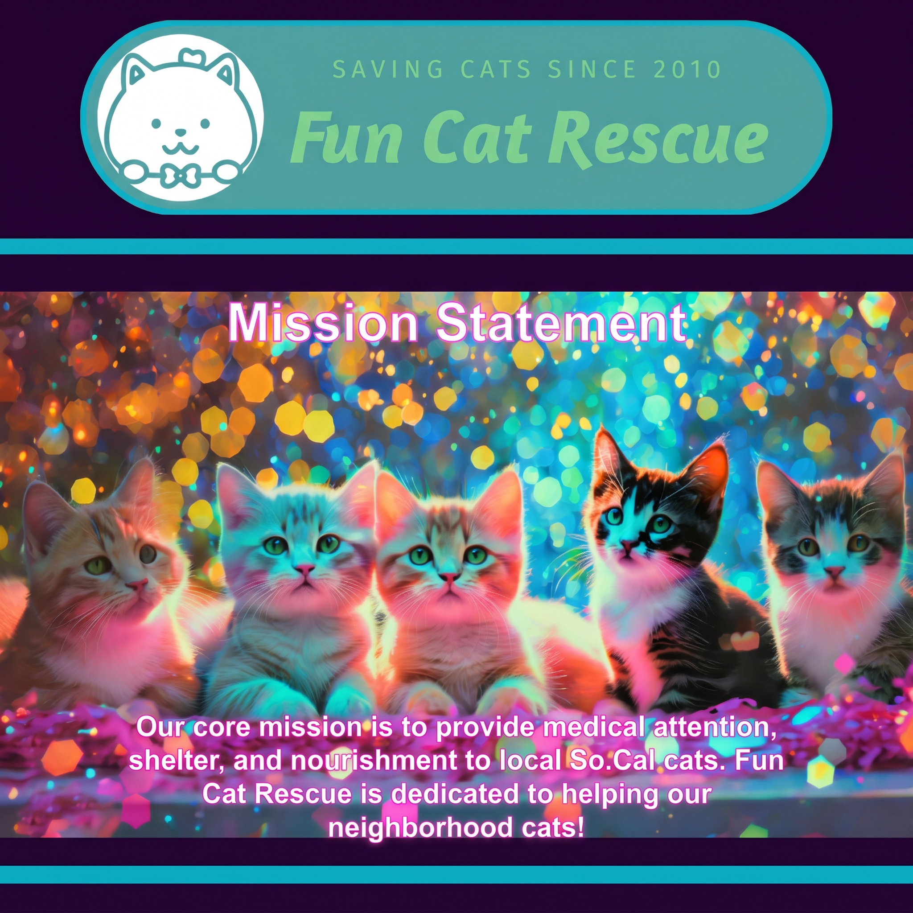
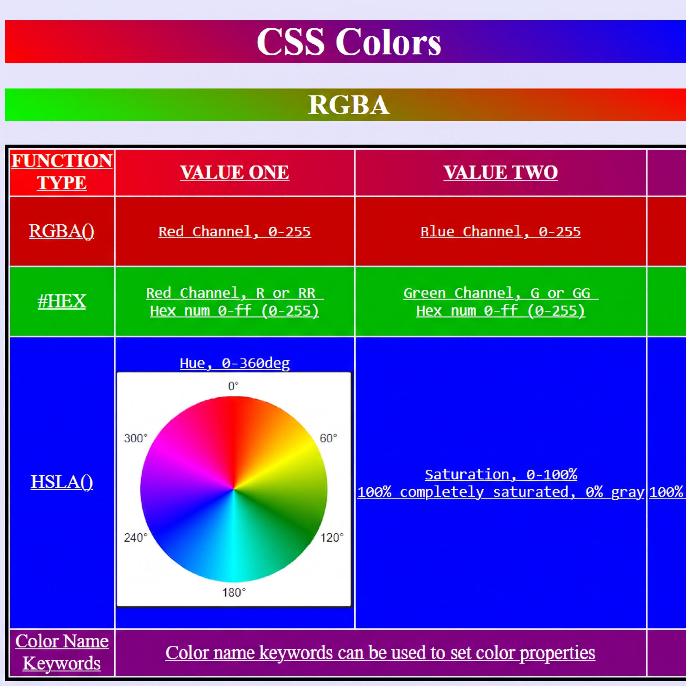

Andres Avendano
Aspiring Technologist
I love building applications using HTML-CSS-JS, Python, and SQL!
I often get lost learning about anything tech related: Computer Hardware, Networking, Operating Systems, Cloud Computing, and Data Science. Seeing how these topics connect together is so fun!
Outside of technology, I love music. I enjoy playing the electric guitar and electric bass. I have also been attending live shows of all kinds for years!
Featured Projects
Here are some projects that I am working on right now.

Fun Cat Rescue
A website for a fictional cat rescue enhanced with AI generated cats and a custom JavaScript slideshow
Link to Fun Cat Rescue.Guitar School
A website for a fictional music school that features a AI generated background and HTML5 form.
Link to Guitar School
Education
Computer Programming AS Degree
Working on this currently.
The A.S. Degree in Computer Programming is designed to prepare students for a career in computer programming.
Computer Programming - AS DegreeLinux Networking and Security
CISN 34/34L Fall 2026
Installation and management of Linux operating system networks and security modules. Concept study and installation of Transmission Control Protocol/Internet Protocol (TCP/IP) protocols, Internet Protocol (IP) addressing, network protocols and servers, routers, and network applications. Creating Linux intranets and connecting to Internet.
Compute Engines in Cloud
CISN 73A Fall 2026
Concepts and skills on building cloud computing systems using a common set of core technologies, algorithms, and design principles centered around distributed systems; using Amazon Web Services (AWS) Management Console to provision, load-balance, and scale applications with compute engines like Elastic Compute Cloud (EC2) and the AWS Elastic Beanstalk (EB); and rationale for using AWS and design principles of scalable cloud applications.
Advanced Programming in Python
CISP 74/74L Fall 2026
Advanced object-oriented programming using Python. Topics include: data structures and algorithms; JavaScript Object Notation (JSON) processing; threads and concurrency; web scraping; web applications; scalable applications on the Amazon web services (AWS) cloud; web services interaction; operating systems interaction; and real world tasks automation.
HTML, CSS, and JavaScript
CISW 17 Fall 2026
Plan, program, implement, publish, and maintain web sites using Hypertext Markup Language version 5 (HTML5), Cascading Style Sheets version 3 (CSS3), and JavaScript. Includes working with text, semantic, and multimedia objects, tables, forms, Application Programming Interfaces (APIs), Document Object Model (DOM), cross-browser compatibility, markup validation, client-side interactivity, and principles of web page design, web site construction, documentation, and publishing.